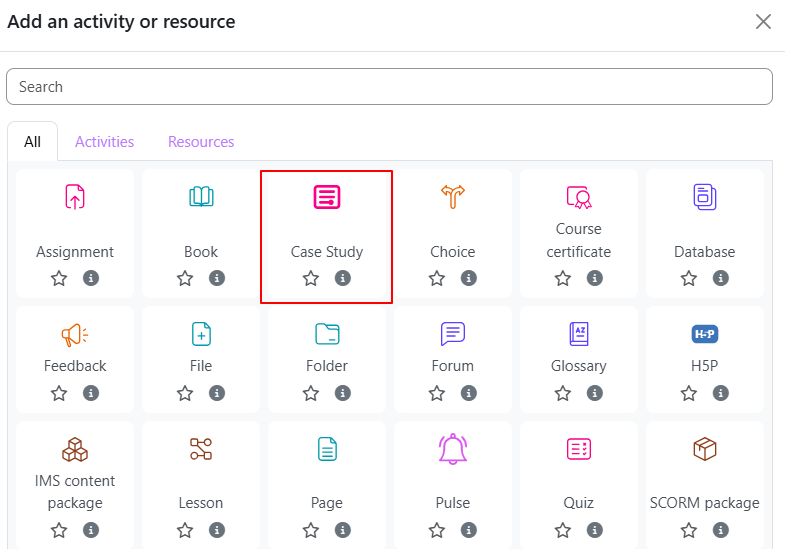
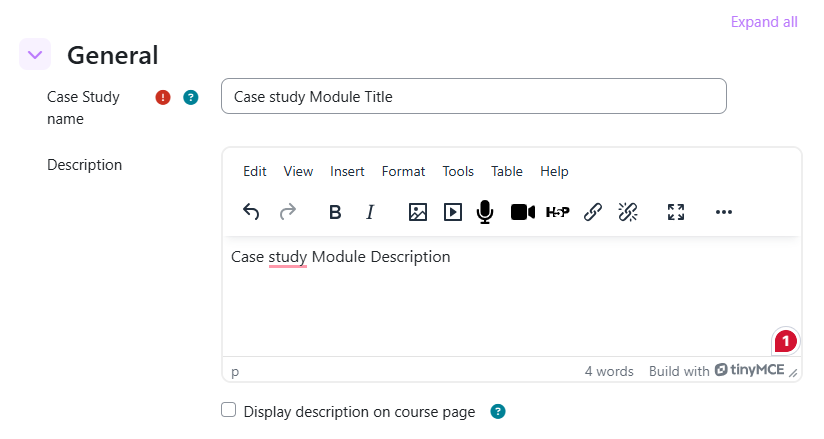
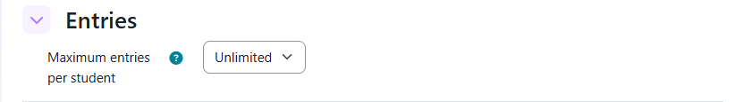
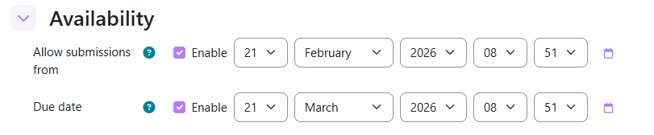
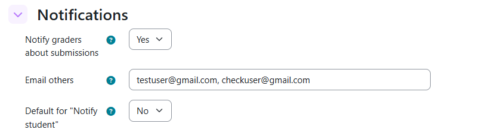
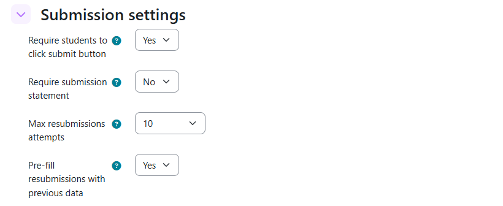
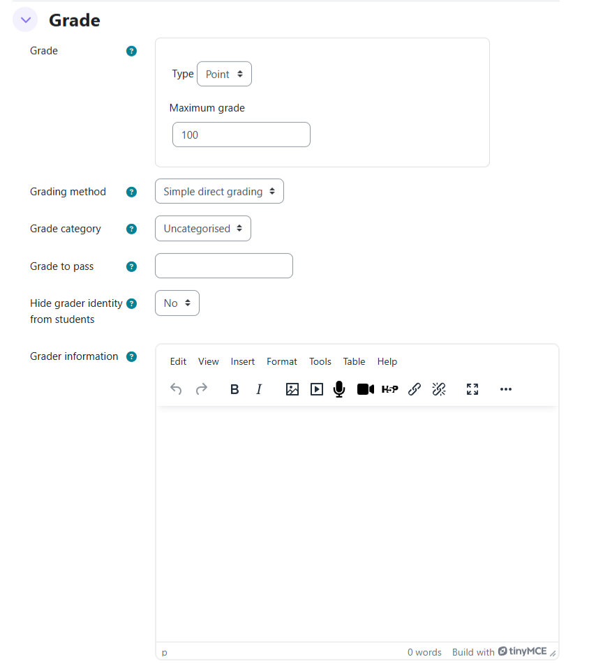

Activity Settings
When you add or edit a Case Study activity, the settings form controls all behaviour: who can submit, when, how many times, how grading works, and what notifications are sent.
Adding the activity to a course
- Turn editing on in your course.
- Click Add an activity or resource.
- Choose Case Study from the list.
- Fill in the settings and click Save and display.

General
The title students see on the course page and at the top of the activity.
An optional description displayed below the activity title. Use this to explain the purpose, expected length, or any contextual information about the case study.

Entries
Controls how many separate case study submissions one student may create.
| Value | Behaviour |
|---|---|
| 0 (default) | Unlimited — student can create as many submissions as they like |
| 1–50 | Student can create at most this many submissions |
1 for a single-submission assessment. Set higher (or to 0) for portfolio activities where students build multiple entries over time.
Availability
If set, students cannot create a submission before this date and time. Leave blank to allow submissions immediately after the activity is published.
Students will see: "This case study will be available for submissions from [date]."
If set, students cannot submit after this date and time. The New Submission button is hidden once the deadline passes.
Students will see: "This case study is no longer accepting submissions. The due date was [date]."

Notifications
These settings control automatic email alerts. See Notifications & Reports for full details of email content.
| Value | Behaviour |
|---|---|
| Yes (default) | Sends an email to all graders when a student clicks Finish and Submit |
| No | No automatic notification is sent to graders |
Optional comma-separated list of additional email addresses to notify when a student submits, in addition to assigned graders. Useful for external assessors or coordinators.
Example: coordinator@example.com, external@partner.org
When this option is enabled, the student will be notified for each submission action. If it is disabled, no notification will be sent.
| Value | Behaviour |
|---|---|
| Yes (default) | Notify student of submission actions |
| No | No notification is sent to the student |

Submission Settings
| Value | Behaviour |
|---|---|
| Yes (default) | Students must explicitly press Finish and Submit. Until then the work stays as a draft invisible to graders. |
| No | Submissions are visible to graders as soon as they are saved. |
| Value | Behaviour |
|---|---|
| No (default) | No statement required |
| Yes | Student must tick: "This case study submission is my own work, except where I have properly acknowledged the work of others." before submitting. |
How many times a student may resubmit after a grader has requested resubmission.
| Value | Meaning |
|---|---|
| 0 | Unlimited resubmissions |
| 1–10 | Maximum number of resubmission rounds allowed |
| Value | Behaviour |
|---|---|
| Yes (default) | When a student starts a resubmission, the form is pre-populated with their previous answers so they can edit and improve |
| No | Resubmission form starts completely blank |

Grading
Choose the grading scale: None (ungraded), Scale (custom scale e.g. Pass/Fail), or Point (numeric with a maximum). The grade appears in the Moodle gradebook column for this activity.
| Value | Behaviour |
|---|---|
| No (default) | Students see the name of the person who graded their submission |
| Yes | Grader's name is hidden from students in feedback and notifications |
A rich text area visible only to graders while they are marking — students cannot see this. Use it for:
- Marking criteria or rubric
- Internal notes or instructions for markers
- Links to relevant grading resources

Completion Conditions
These settings define when a student is considered to have completed this activity for Moodle course-completion tracking. See the dedicated Completion Rules page for full details and examples.